结论与覆盖
- 真实RevMCP stdio会话显式连接RevGame.Unity，编辑态发现216个能力，Play后发现246个能力、103条GM。
- 攻击规则专项96条断言通过：命中数量、实际扣血、事件一致性、九格爆区、大棋去重、穿透不拐弯、治疗与收割。
- 本轮视觉：9/9种，172条检查，144帧，清理状态 True。
- 最终生产配置三种子六章回放：180胜/0负；中位17.81秒，Boss中位247.50秒。固定策略不代表任意牌序必胜。
- 未执行独立Player、Android真机或手机GPU验收，不承诺目标设备帧率。
环境与隔离
Unity 2022.3.15f1c1，Windows Editor / DX11，正式StartScene入口，PC真实AssetBundle。初始场景无未保存修改。测试使用隔离剧情与积分状态，不写正式进度。演示靶阵高生命仅维持画面，不作为正常数值胜率证据。
工程：RevGame_Client/UnityProject/RevGame.Unity。使用RevMCP的真实tools/call协议，不把直接Python Hub调用冒充MCP。原始工单、负结果与采样摘要在忽略目录 .codex/work/piece-differentiation/。
九种棋子配方
全部数值来自战斗数值参数.xlsx。间隔为相对原职业周期的倍率，最终伤害仍受原有加成、护盾与阵营倍率影响。敌方保留既有直线、炮架与零气禁攻门槛。
| 棋子 | 射程上限 | 间隔倍率 | 首目标倍率 | 后续倍率 | 目标上限 | 职责 |
|---|---|---|---|---|---|---|
| 剑士 | 2格 | 0.7 | 0.72 | 0 | 1 | 高频单点 |
| 盾战 | 1格 | 1.25 | 0.8 | 0.35 | 2 | 邻近盾击与自疗 |
| 重剑 | 2格 | 1.6 | 1.45 | 0.45 | 3 | 前向多目标重击 |
| 弓箭手 | 6格 | 0.9 | 2.1 | 0 | 1 | 单格高伤 |
| 重弩 | 7格 | 1.8 | 1.55 | 0.55 | 3 | 直线穿透 |
| 水法师 | 4格 | 1.45 | 0.8 | 0.4 | 3 | 逐段连锁 |
| 火法师 | 4格 | 1.9 | 1.4 | 0.15 | 9 | 中心强化3×3爆破 |
| 牧师 | 4格 | 1.3 | 0.65 | 0 | 1 | 攻击与低血友军治疗 |
| 刺客 | 3格 | 1.4 | 1.2 | 0 | 1 | 低血目标收割 |
实际调用顺序与断言
- rev_discover：重新发现当前实例，区分编辑态与运行期注册。
- rev_run：editor.status、scene.list、editor.console、game.piece-attacks.rules，记录原状态并执行规则。
- rev_run：ab.mode(enabled=true)、game.story.test-arm(flags=3)、editor.play；域重载后再次rev_discover。
- rev_call：GM完整名称 RevGame/棋子差异化规则检查，确认96条业务断言。
- rev_call：RevGame/棋子差异化视觉开始；通过RevGame/棋子差异化视觉状态读取结果。每种16帧、150ms间隔，同时检查实际命中、范围事件、启用Renderer和池预算。
- rev_run：runtime.screenshot、runtime.logs及清理后置，截图证明画面，业务结论由断言决定。
{
"stage": "completed",
"error": "",
"kind": "Assassin",
"directory": "Temp/PieceAttackVerification",
"completed": 9,
"assertions": 172,
"frames": 144,
"cleaned": true
}真实动态画面
仅缩放与压缩，不裁剪、不拼接、不补画。GIF宽不超过720；静态JPEG宽不超过1600。自动支援保持运行，因此部分帧存在帮手弹幕遮挡；本报告不把Renderer启用等同于所有帧都无遮挡。
剑士
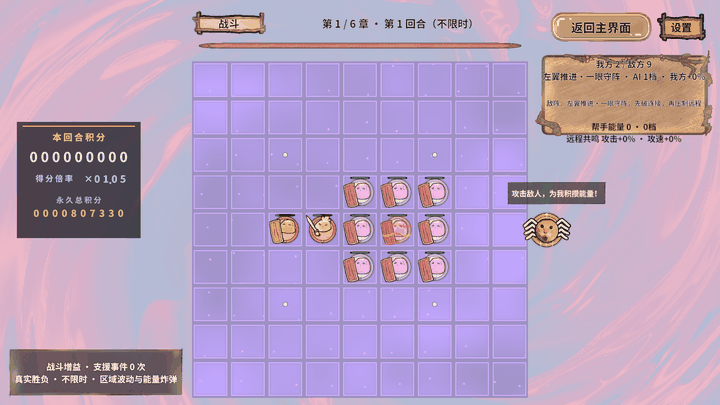
盾战
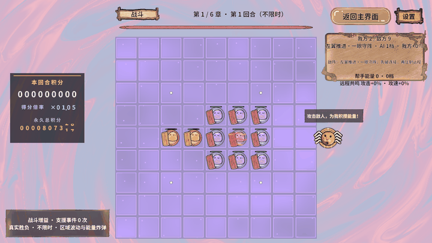
重剑
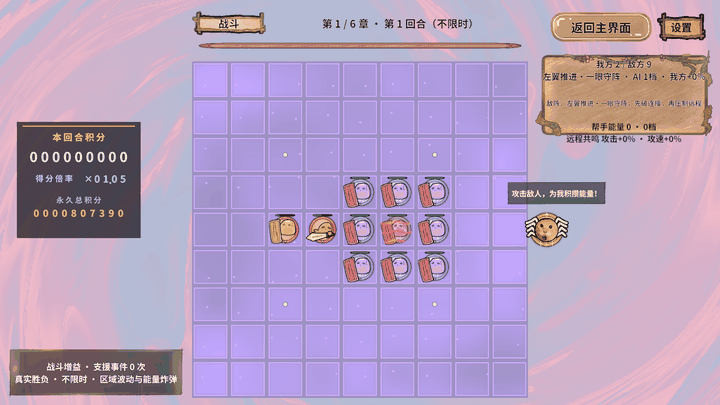
弓箭手
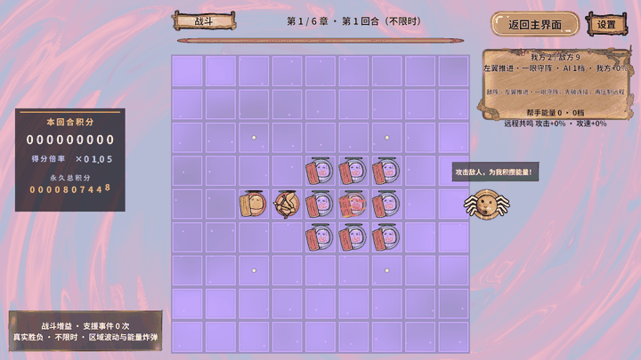
重弩
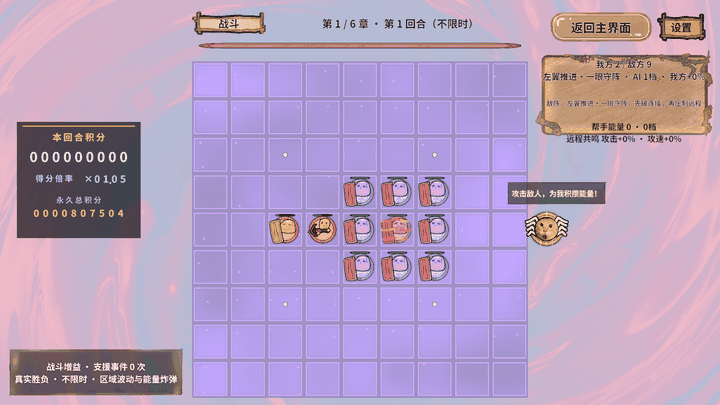
水法师
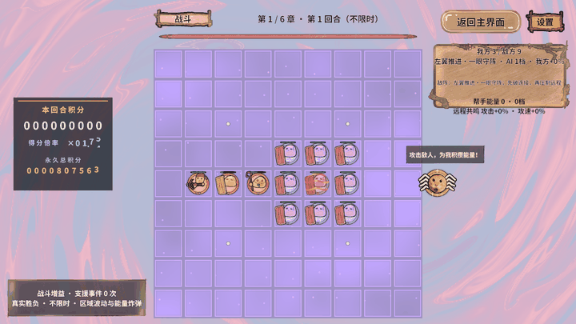
火法师
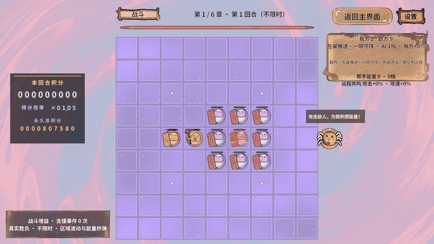
牧师
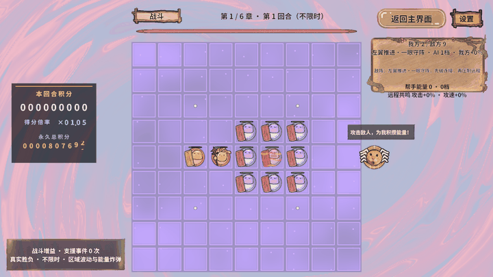
刺客
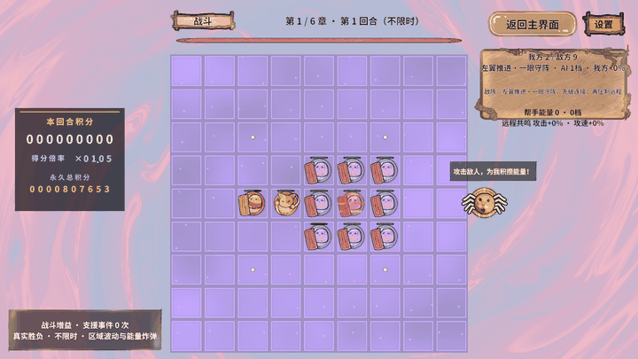
MCP场景证据
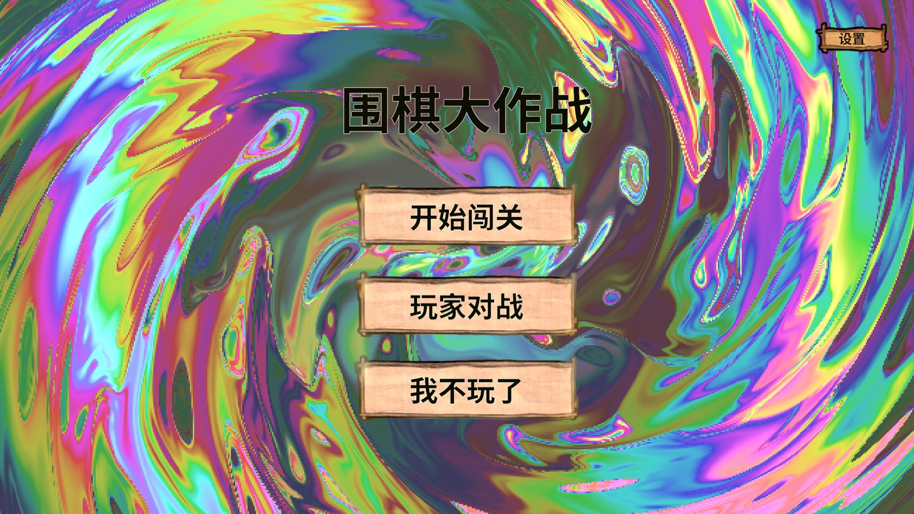
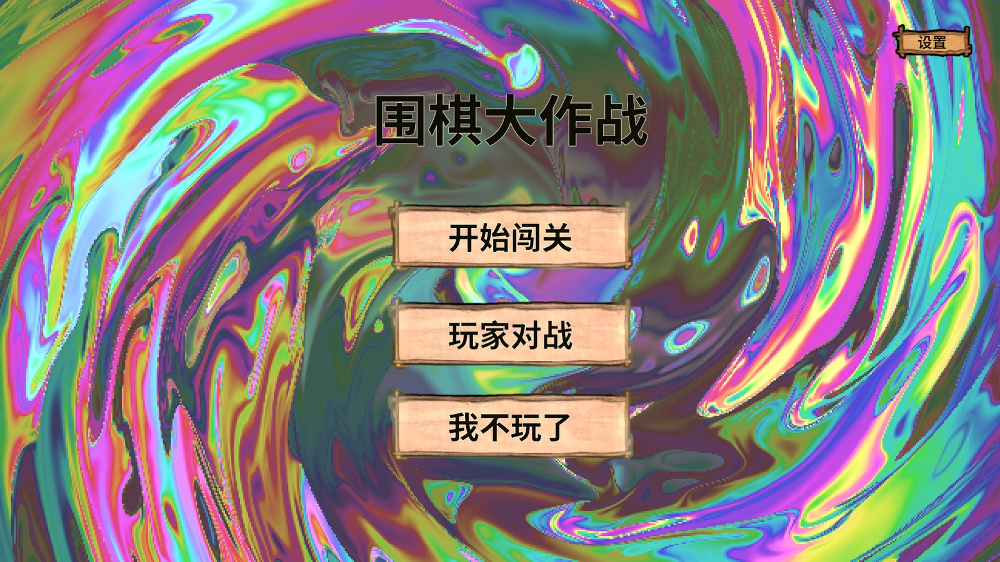
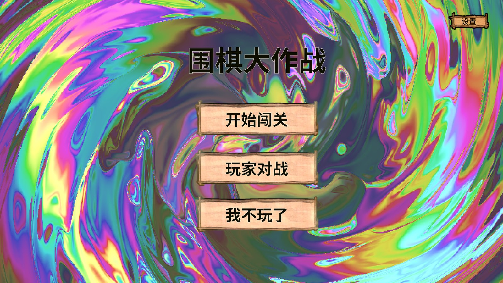
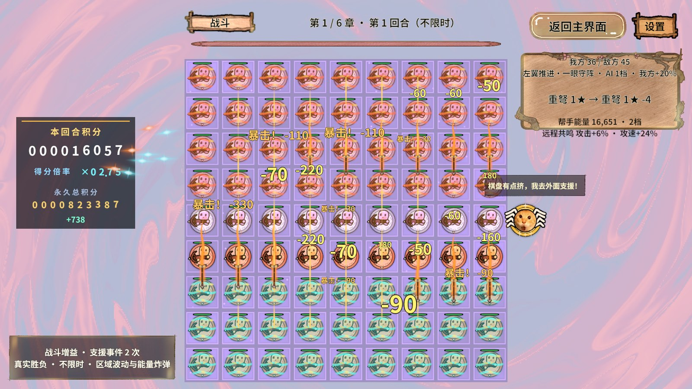
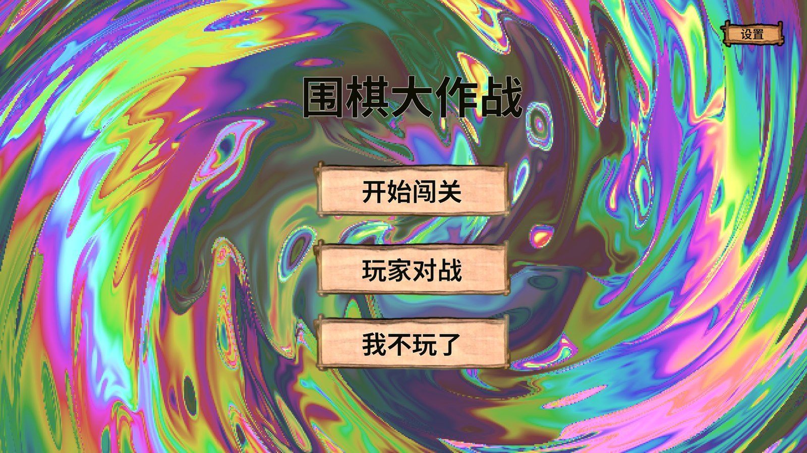
性能与生命周期
复用私有缓冲、几何缓存、共享材质和RevPool。范围反馈通过有界公平队列调度，仍受16个短效预算限制，弹道保持35个上限。退出清除队列、停止Tween并归还对象。
采样完成不等于性能达标。本轮81棋、20秒、0预热，平均3.59 FPS，帧间隔P95 912.57ms，GPU P95 36.52ms。该轮72/72帧全部失焦，性能样本不具前台验收资格，不能用来判定前台帧率或归因于棋子规则。此前48棋采样又存在负载增至52棋的问题，两轮均保留原始数据，但不宣称性能已达标。Editor整帧含编辑器与工具开销，也不能代替手机或独立Player验收。
环境为i7-12700H / Intel Iris Xe / DX11 / 1920×1080，VSync=1，采样期间不截图。采样前后核对81棋与实际攻击，后台夹具每秒补生命以维持负载。没有降低棋数、关闭效果或导出Profiler录制。缺失计数不能解释为0。
{
"runId": "8f59eea6e46f4a71b8640fe26a666901",
"status": "completed",
"error": "",
"startedUtc": "2026-10-31T15:36:31.8935268Z",
"endedUtc": "2026-10-31T15:36:52.0250340Z",
"success": true,
"cancelled": false,
"frames": 72,
"gpuSamples": 72,
"unfocusedFrames": 72,
"errors": 0,
"requestedSeconds": 20.0,
"warmupSeconds": 0.0,
"seconds": 20.079378099995665,
"fps": 3.5857684257669087,
"p50Ms": 224.21790000225883,
"p95Ms": 912.5726999918697,
"p99Ms": 1081.8685999984154,
"maxMs": 1081.8685999984154,
"gpuP50Ms": 5.09823,
"gpuP95Ms": 36.524374,
"over125Ratio": 1.0,
"over167Ratio": 1.0,
"over333Ratio": 1.0,
"environment": {
"product": "RevGame.Unity",
"buildId": "00000000000000000000000000000000",
"unityVersion": "2022.3.15f1c1",
"platform": "WindowsEditor",
"backend": "Mono",
"cpu": "12th Gen Intel(R) Core(TM) i7-12700H",
"gpu": "Intel(R) Iris(R) Xe Graphics",
"graphicsApi": "Direct3D11",
"resolution": "1920x1080",
"editor": true,
"development": true,
"focused": false,
"runInBackground": true,
"enabled": true,
"frames": 0,
"targetFrameRate": -1,
"vSyncCount": 1,
"seconds": 0.0,
"fps": 0.0,
"p50Ms": 0.0,
"p95Ms": 0.0,
"p99Ms": 0.0,
"maxMs": 0.0,
"gpuMs": -1.0,
"metrics": []
},
"averages": [
{
"name": "Draw Calls Count",
"unit": "count",
"available": true,
"value": 39.44444444444444
},
{
"name": "Total Batches Count",
"unit": "count",
"available": true,
"value": 39.44444444444444
},
{
"name": "SetPass Calls Count",
"unit": "count",
"available": true,
"value": 27.375
},
{
"name": "Triangles Count",
"unit": "count",
"available": true,
"value": 4538.930555555556
},
{
"name": "Vertices Count",
"unit": "count",
"available": true,
"value": 8632.125
},
{
"name": "Dynamic Batches Count",
"unit": "count",
"available": true,
"value": 14.11111111111111
},
{
"name": "Static Batches Count",
"unit": "count",
"available": true,
"value": 0.0
},
{
"name": "Instanced Batches Count",
"unit": "count",
"available": true,
"value": 0.0
},
{
"name": "GC Allocated In Frame",
"unit": "bytes",
"available": true,
"value": 817661.9722222222
},
{
"name": "Total Used Memory",
"unit": "bytes",
"available": true,
"value": 2204598649.6805553
},
{
"name": "Total Reserved Memory",
"unit": "bytes",
"available": true,
"value": 3105410003.1666665
},
{
"name": "GC Used Memory",
"unit": "bytes",
"available": true,
"value": 730797511.1111112
},
{
"name": "Main Thread",
"unit": "ms",
"available": true,
"value": 278.67053888888887
},
{
"name": "Render Thread",
"unit": "ms",
"available": false,
"value": -1.0
}
],
"workload": {
"piecesBefore": 81,
"piecesAfter": 81,
"attacksBefore": 0,
"attacksAfter": 954,
"kind": "81满盘重弩，高生命及围困免疫压力夹具，非普通难度"
},
"cleanup": {
"game.performance.state": {
"stage": "cleaned",
"error": "",
"screen": "Home",
"ready": false,
"isolated": true,
"transitioning": false,
"cleaned": true,
"fullscreen": false,
"benchmark": false,
"resolution": "1920x1080",
"windowMode": "Windowed",
"pieces": 81,
"attacks": 1026,
"logic": 0,
"pieceRefs": 0
},
"story.state": {
"scene": "StartScene",
"tutorialLayout": null,
"unlockedChapter": 6,
"chapter": 1,
"tutorialActive": false,
"tutorialOpen": false,
"scoreIsolated": true,
"preparationGranted": true,
"battleElapsed": 17.1875,
"enemyHp": 3150000,
"playerHp": 2520000,
"sameBoard": false,
"handCount": 6,
"phase": "Battle",
"playerCount": 36,
"enemyCount": 45,
"renderedCells": 0,
"renderedPieces": 0,
"prepareOpen": false,
"hudOpen": false,
"guideFrame": -1,
"guideFrameCount": 3,
"screen": "Home",
"transitioning": false,
"blocked": false,
"playing": false,
"episode": "",
"line": 3,
"error": "",
"openingComplete": true,
"tutorialComplete": true,
"isolated": true,
"step": "none",
"liberties": -1,
"locked": false,
"typing": false,
"soundStarted": false,
"visibleCharacters": 0,
"guidePacked": true
}
}
}失败、修复与未验证项
- 初次视觉夹具重复申请隔离会话已经持有的积分租约，未进入截图阶段；已修复为仅在没有租约时申请，并只释放自己持有的租约。
- 开发阶段曾遇到通用AB构建未复制首包，冷启动读取旧配置；已通过项目BuildAndCopy发布并重新验证。
- 首轮48棋采样完成，但后置检查实际已因正常增援增加到52棋，固定数量断言失败。保留该轮25.05 FPS/P95 97.22ms原始结果，不作为固定48棋性能结论；改用既有81满盘夹具重新采样，不改生产增援规则、不放宽数量断言。
- 旧默认全量回归仍失败于开工前已存在的“首手时刻到期真实提交一手”；没有删除或放宽该断言，不能将专项通过称为全部旧回归通过。
完整失败工单未覆盖删除。图形状态不是completed或清理不为true时，不判整体图形通过。未采集Profiler录制文件、内存快照或ZIP。
框架可行性结论
本次通过项目配方、纯规则与受控GM扩展普通棋子行为，沿用RevEvent、RevPool、RevTask、RevDataTableManager、RevScene及既有域生命周期，无需修改Assets/Revolution快照。运行期查询、正式动作、伤害事实和图形快照可以分开验收；隔离租约必须遵守唯一所有者契约。